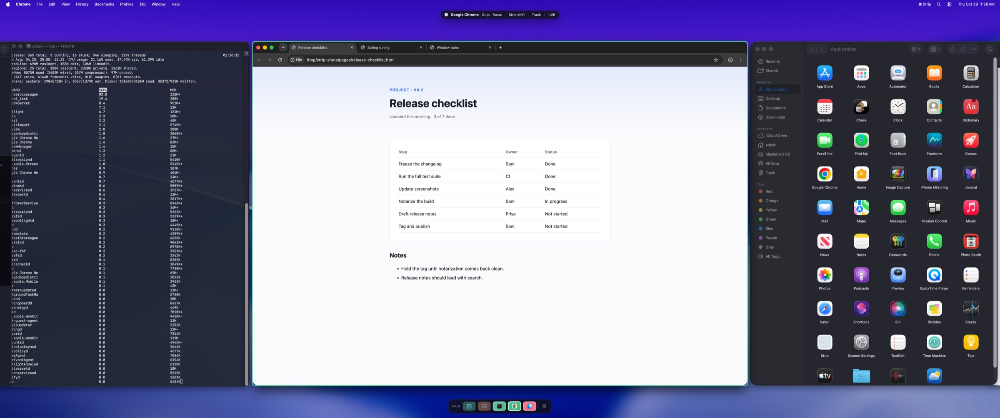
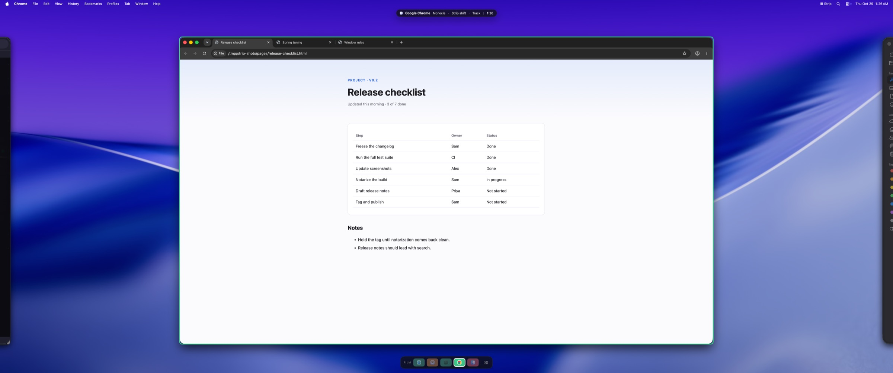
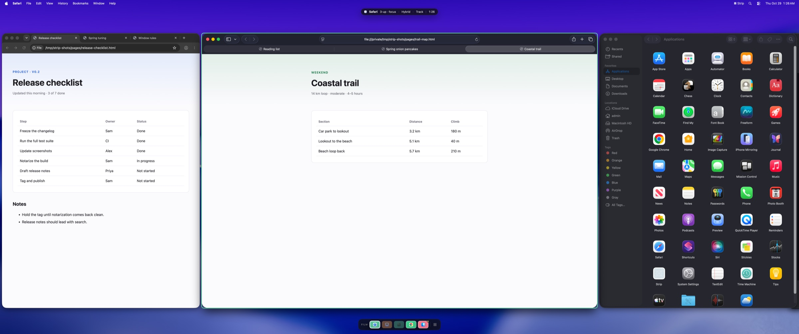
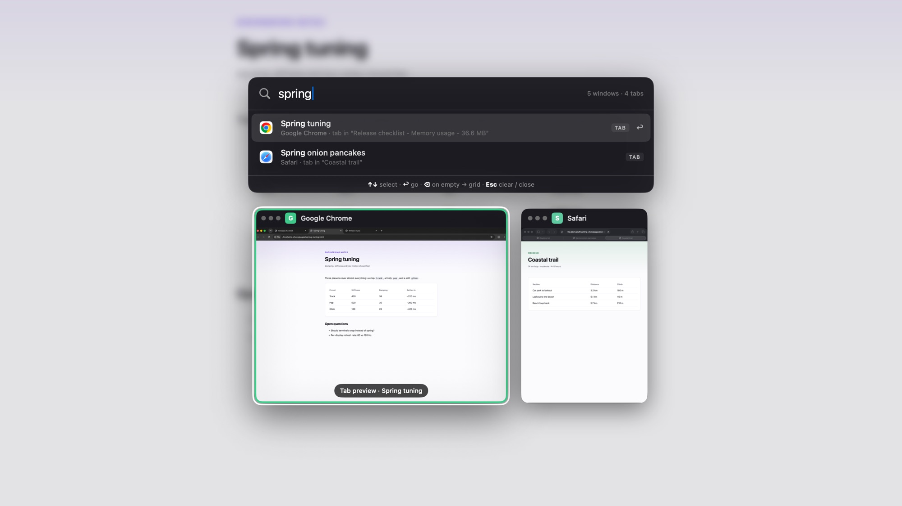
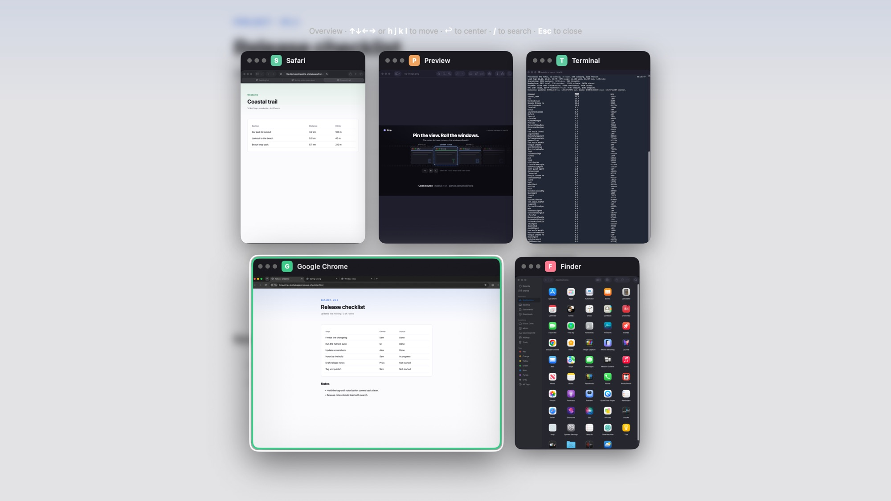
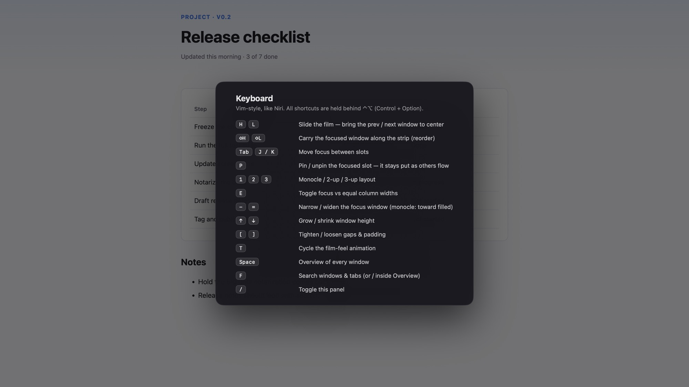

Window manager for macOS
Pin the view.
Roll the windows.
Strip is a window manager for macOS where the slots stay put and the windows slide behind them — like a strip of film past a fixed projector gate.
Niri‑inspired, built for macOS · free and open source



How it works
Six ideas, one strip of film.
-
Your focus keeps drifting off‑center.
Scrolling and tiling layouts move the viewport. The window you care about lands wherever it fits — so you re‑center it by hand, again and again. Forget, and you’re craning at the left edge.
-
Nail the center slot in place.
Stop moving the viewport. Fix one slot dead‑center and slide the windows so your focus always lands there. H and L roll the film one frame.
-
Neighbors fill the sides — automatically.
Open side slots and the same film fills them with the adjacent windows. Glanceable context on the edges; your work stays sacred in the middle. Nothing to drag.
-
Lock a slot. Let the rest flow.
Pin a window and it’s exempt from the roll — your reference stays put while the film cycles through the others. Pin none, some, or all: strip‑shift → hybrid → independent.
-
Same strip. Choose how many slots.
Monocle, two‑up, or three‑up — the film is unchanged, you just open more gates onto it. Switch anytime with 1 / 2 / 3.
-
Lost a window? Type its name.
Press F and type a few letters. Strip finds the window, or the browser tab inside it, and rolls it straight into the center slot. No hunting along the film.
The payoff
Decide where to look once.
The center never moves, so your eyes and neck don’t either. You stop managing window positions and just roll the film to whatever you need.
-
Strip‑shift
pin nothing
Every window rolls through the center.
-
Hybrid
pin some
Keep a reference window fixed while the rest roll past it.
-
Independent
pin all
Every slot holds its own window, like a classic tiling layout.
New · window & tab search
Find any window. Or any tab.
Press ⌃⌥F and start typing. The Overview narrows to the windows that match, and a ranked list shows the tabs inside them too.
- Searches tabs in Firefox, Safari and Chrome, plus native tabs in Terminal and Finder.
- Arrow onto a browser tab and its card previews that tab. ↩ takes you there; Esc puts every tab back the way it was.
- Typing never takes focus from your apps. ⌘Tab or ⌘Space closes the Overview.
- Tab titles stay in memory. Your queries and the tabs Strip finds never reach its log, which records only counts.

Built for real macOS windows
Not a mock-up: Strip moves the actual windows of the apps you already use.


-
Smooth, real motion
Spring-animated moves at your display’s refresh rate, using the public macOS Accessibility API. No SIP changes, no scripting additions. Pick the feel: Track, Pop or Glide.
-
Tiles as you work
New windows open right next to the one you’re using. Close the centered window and its neighbor steps in. Dialogs, palettes and tiny windows float instead of joining the film.
-
Overview and search
See every window as a live thumbnail and move through them with the arrow keys or HJKL. Type to search windows and their tabs.
-
Film rail and focus ring
A compact minimap with app icons and hover previews, docked to any screen edge. A colored ring follows the focused window as it moves.
-
Respects your hands
Strip pauses while you drag. Move a window and it springs back to its slot; resize the main window and Strip keeps your size, reflowing the layout around it.
-
Fits stubborn apps
Apps with a minimum or fixed size, like Console or System Settings, get slots that fit them instead of spilling over their neighbors. Strip learns each window’s limits.
-
Keyboard focus follows
Rolling the film makes the centered window the active one, so you can type into it straight away. No clicking to catch up.
-
Stays out of the way
Lives in the menu bar with no Dock icon, never takes focus for itself, and remembers your layout, sizes and rail position across restarts.
-
Always an escape hatch
⌃⌥0 puts every window back on screen and pauses Strip. Quitting never strands a window off‑screen.
Keyboard first
Every command sits behind ⌃⌥ (Control + Option).
| Keys | Action |
|---|---|
| ⌃⌥H / ⌃⌥L | Roll the film to the previous / next window |
| ⌃⌥J / ⌃⌥K, ⌃⌥Tab | Move focus between slots |
| ⌃⌥⇧H / ⌃⌥⇧L | Swap the focused window with its neighbor |
| ⌃⌥1 ⌃⌥2 ⌃⌥3 | Monocle, two‑up, three‑up |
| ⌃⌥P | Pin or unpin the focused slot |
| ⌃⌥E | Toggle focus emphasis / equal widths |
| ⌃⌥= / ⌃⌥- | Widen / narrow the focused window |
| ⌃⌥↑ / ⌃⌥↓ | Make windows taller / shorter |
| ⌃⌥[ / ⌃⌥] | Tighten / loosen gaps and padding |
| ⌃⌥T | Cycle the motion style: Track, Pop, Glide |
| ⌃⌥Space | Overview |
| ⌃⌥F | Search windows and tabs |
| ⌃⌥0 | Release all windows / resume |
| ⌃⌥/ | Show every shortcut |
Inside the Overview
| ←→↑↓ or HJKL | Move between cards |
| ↩ | Go to the window |
| / | Start searching |
| Esc or Space | Close |
While searching
| ↑↓, Tab, ⌃N/⌃P | Choose a result |
| ↩ | Go to the window or tab |
| ⌫ on an empty query | Back to the grid |
| ⌃W / ⌃U or ⌘⌫ | Delete a word / clear |
| Esc | Clear the query, then close |
Get started
Requirements
- macOS 14 or newer
- Xcode 16 command-line tools
- Accessibility permission (prompted on first launch)
- Screen Recording permission, only for Overview thumbnails
Build from source
git clone https://github.com/shidil/strip.git
cd strip
make setup-signing # once: a local signing identity
make test
make open
make open builds the app and launches it through macOS, which is what lets
the Accessibility grant apply. Full instructions are in the
README.
Why the signing step?
macOS ties Accessibility and Screen Recording permission to the app’s code signature.
Without a stable identity, every rebuild looks like a new app and you have to grant
permission again. make setup-signing creates a self‑signed identity in
your login keychain, for local builds only.
More on signing.
If something goes wrong
Press ⌃⌥0 to put every window back and pause Strip, or quit it from the menu bar. Permission trouble? Open a setup issue. To remove Strip, follow the uninstall steps.
Questions
How is this different from a scrolling window manager?
In a scrolling layout the viewport follows focus, so the window you care about can end up anywhere on screen. Strip inverts that: the center slot is fixed and the windows move, so focus always lands in the same place.
Do I need to disable System Integrity Protection?
No. Strip moves and resizes windows only through the macOS Accessibility API. It doesn’t require disabling SIP or installing a scripting addition.
Is it on the Mac App Store?
No. To tell windows apart reliably, Strip uses a private (but SIP-free) system call, which the App Store doesn’t allow. Builds are source-only for now.
Does it support multiple displays or Spaces?
Not yet. Strip currently manages a single display and is developed on a 3440×1440 ultrawide. Multi-display and Spaces support are deliberately deferred.
Which apps does tab search work with?
Firefox, Safari and Google Chrome, plus apps with native macOS tabs such as Terminal and Finder. Strip reads tab bars through the Accessibility API, so it needs no browser extension and no extra permission. Other Chromium browsers (Brave, Arc, Edge) may work but haven’t been tested.
Does it have workspaces?
Not yet; workspaces (several independent strips, switched by hotkey) are next on the roadmap. After that: launch at login, a config file for hotkeys and per‑app rules, and vertical columns inside each slot. Follow along in the project plan.
Does Strip collect any data?
No. It contains no networking, telemetry, analytics or update checks. Overview thumbnails and the tab titles search reads are held in memory and never written to disk. Search queries never reach Strip’s local diagnostic log. See the privacy notes.